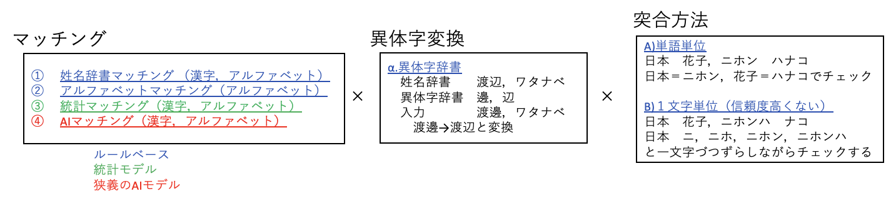
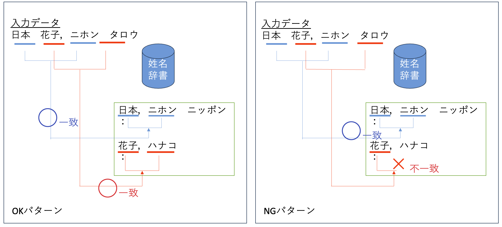
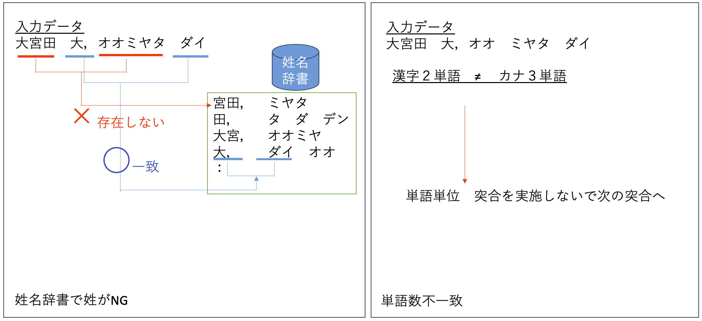
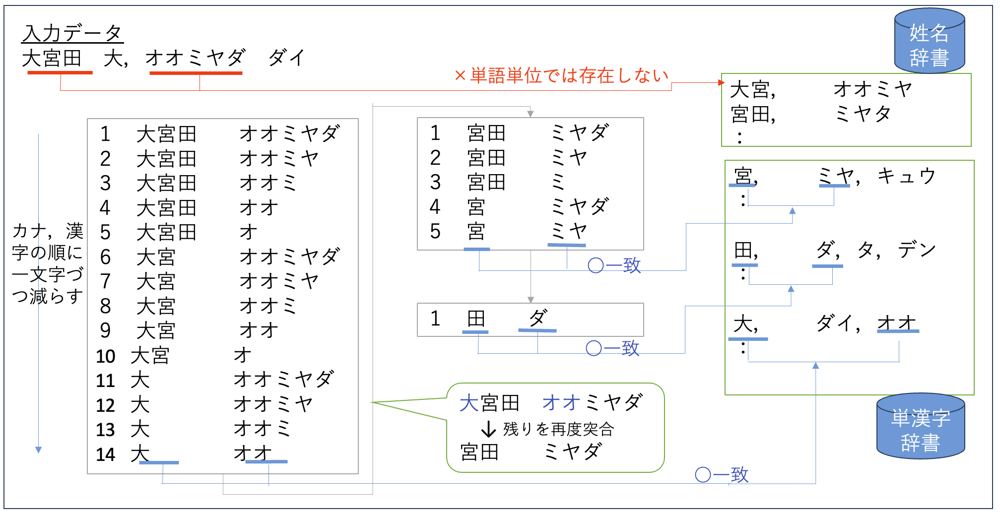

アルゴリズム
エンジンのアルゴリズムは下記のマッチングと異体字変換，突合方法の組み合わせを用いて漢字とカナの突合を行う。また，アルゴリズムを実施する際に，単語単位でマッチしない場合には一文字単位でマッチするなどを合わせて行っている。

マッチング
- 姓名辞書マッチングエンジン
姓名辞書や単漢字辞書を用いて，漢字とカナのペア辞書にあるかどうかで判定する。 漢字・アルファベットの単語単位で，姓名辞書に漢字・アルファベットとカタカナの組み合わせがあるかどうかを検査し，あれば，突合OKとする。

- 外国人マッチングエンジン
アルファベットとカタカナの組合せパターンから，アルファベットとカナが一致しているか判定する。詳細は 佐藤 理史. 2020 東京オリンピック参加者名簿の翻訳. 自然言語処理, Vol.30, No.2, pp748-772, 2023. を参照のこと。

- 統計マッチングエンジン（信頼度高くない）
統計辞書に漢字とカナのペアの組み合わせ数が閾値以上あるかどうかで，突合の判定する。本氏名漢字カナ突合モデルでは，統計データを有さないため，使用していない。
なお，下記例では，閾値を４としている。

- AIマッチングエンジン（信頼度高くない）
AIモデルに漢字を入力し，出力された一覧に，カナが入っているかどうかで判断する。本氏名漢字カナ突合モデルで使用している事前学習モデルについては， AIモデル を参照のこと。

異体字変換
異体字変換とは，漢字姓名中に，異体字を持つ漢字がある場合には，姓名辞書マッチングで突合できなかった場合に，異体字を置き換えて，再度姓名辞書マッチングを行う。

突合方法
漢字・アルファベット姓名とカタカナを突合する際には，下記２種類の手法を用いて突合を行う。
- 単語単位
入力される漢字・アルファベット姓名はスペースで区切られて単語に分解できる。単語同士の，漢字・アルファベットとカタカナのペアを用いて，姓名辞書マッチングや外国人マッチング，AIマッチングなどを行うことで，漢字・アルファベットとカタカナの突合を行う。
 文字単位
- 姓名辞書
１文字単位に漢字とカナをそれぞれ姓名辞書を用いてマッチングし，最終的に漢字とカナが全てマッチングするかどうかで判定する。辞書にマッチングする際には，より長い単語を優先する，最長一致アルゴリズムで実施する。

- 単漢字辞書
同様に，単漢字辞書を用いて一文字づつ漢字とカタカナをマッチングする。